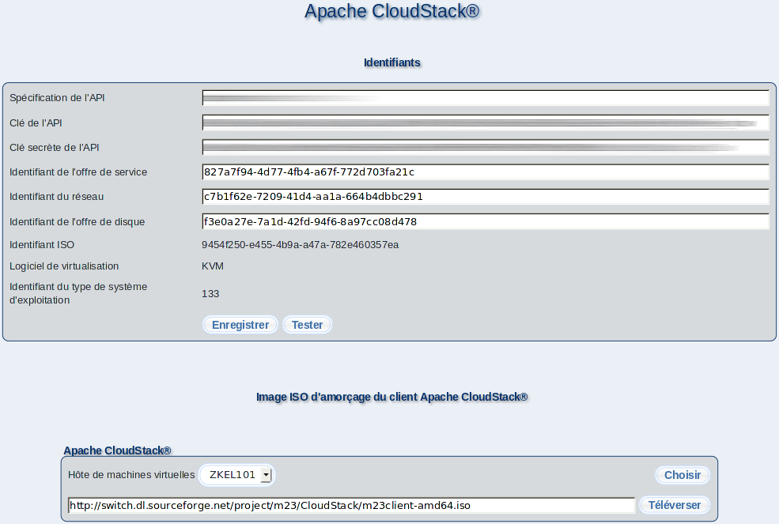

Cette partie permet le paramétrage d'Apache CloudStack.

Veuillez saisir vos identifiants dans ''Identifiants'', pour permettre à votre serveur m23 de contacter le service Apache CloudStack. Vous obtiendrez les paramètres auprès de votre fournisseur de service Apache CloudStack ou votre propre installation d'Apache CloudStack.
Dans ''Spécification de l'API'', veuillez saisir l'URL (e.g. https://my-server/client/api ) pour pouvoir communiquer avec le service Apache CloudStack. Afin d'y accéder, vous aurez également besoin d'une clé et d'une clé secrête pour l'API, que vous renseignerez dans ''Clé de l'API'' et ''Clé secrète de l'API''.
''Identifiant de l'offre de service'' (processeur (CPU) et mémoire (RAM)), ''Identifiant du réseau'' (réseau virtuel Apache CloudStack) et ''Identifiant de l'offre de disque'' (type de disque dur virtuel) spécifient les valeurs du client m23 nouvellement créé dans Apache CloudStack .
(Actuellement) Vous n'avez pas la possibilité de modifier le média d'amorçage à partir duquel l'installation du système d'exploitation démarrera, l'''Identifiant ISO'', utilisé par le logiciel de virtualisation: ''Logiciel de virtualisation'' et le numéro d'identification du système d'exploitation: ''Identifiant du type de système d'exploitation''.
En cliquant sur ''Enregistrer'' ou sur ''Tester'', vous sauvegardez la configuration. La seconde possibilité exécutera d'abord un test de connexion et ne sauvegardera la configuration que si ce test est concluant.
Dans ''Image ISO d'amorçage du client Apache CloudStack'', vous pouvez choisir la zone Apache CloudStack (''Hôte de machines virtuelles''), ou l'image ISO d'amorçage du client m23 sera téléversé (si elle n'y est pas déjà présente). Vous pouvez démarrer l' téléversement en cliquant sur ''Téléverser''. ''Identifiant ISO'' sera automatiquement adapté après ce téléversemant.
Ces paramétrages sont enregistrés sur le serveur dans le fichier ''/m23/inc/CloudStackConf.php'' et peuvent être édités avec un éditeur de texte.
Sous-sections
root
2017-01-05